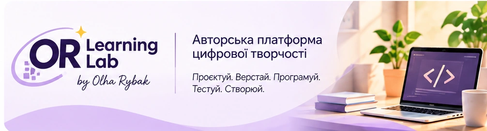

UI/UX Design · Figma
Проєктування інтерфейсів, компоненти, прототипи та дизайн-системи.
Структура курсуПереглянути курс →
Від дизайну до повноцінної веброзробки — крок за кроком.
Проєктування інтерфейсів, компоненти, прототипи та дизайн-системи.
Структура курсуПереглянути курс →Від семантичної розмітки до адаптивної верстки сучасних сторінок.
Структура курсуПереглянути курс →Алгоритми, функції, масиви, DOM та інтерактивні вебсторінки.
Структура курсуПереглянути курс →ШІ як помічник веброзробника: критичне мислення, тести й реальні продукти.
Доступна LAB 01Переглянути курс →Серверна логіка, API, бази даних та основи безпеки.
Структура курсуПереглянути курс →OR Learning Lab — авторський освітній простір Ольги Рибак. Тут теорія переходить у практичні завдання, а результати навчання — у власне портфоліо цифрових робіт.